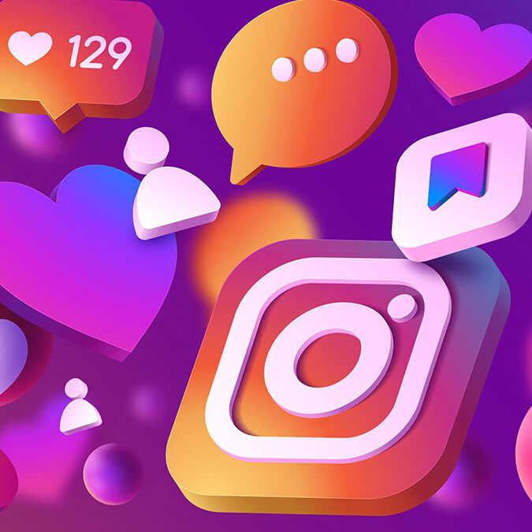

Bienvenidos al mundo de las redes sociales
INTRODUCION A LAS REDES SOCIALES
Las redes sociales son plataformas digitales que permiten a las personas conectar, interactuar y compartir
contenido como texto, imágenes y videos, creando una red personalizada de amigos, colegas u organizaciones
con intereses o relaciones comunes.
Su propósito principal es la comunicación, la difusión de información y la formación de comunidades en
línea, aunque para un buen uso es fundamental la netiqueta(en redes sociales son normas de comportamiento y
buenos modales para el entorno digital que buscan crear un ambiente respetuoso y seguro, promoviendo
interacciones positivas y la sana convivencia en línea.
Incluye principios como el respeto a la privacidad y a la opinión ajena, la difusión de información
verificada, la corrección en el lenguaje, la adaptación al contexto de cada plataforma y la conciencia sobre
la huella digital que se deja y conocer los riesgos y beneficios para una experiencia positiva y segura)

TIPOS DE REDES SOCIALES
- FACEBOOK
- INSTAGRAM
- WHATSAPP
FACEBOOK
Facebook es un servicio de redes y medios sociales en línea estadounidense con sede en Menlo Park,
California. Su sitio web fue lanzado el 4 de febrero de 2004 por Mark Zuckerberg, junto con otros
estudiantes de la Universidad de Harvard y compañeros de habitación, Eduardo Saverin, Andrew McCollum,
Dustin Moskovitz y Chris Hughes. Pertenece a la empresa Meta que incluye otros servicios informáticos y de
redes sociales. Está disponible en español desde el 11 de febrero de 2008.[2]
Es una plataforma que funciona sobre una infraestructura de computación basada en sistemas GNU/Linux, usando
el conjunto de tecnologías LAMP, entre otras.[3]
Inicialmente, los fundadores limitaron la membresía del sitio web a los estudiantes de Harvard, pero después
lo ampliaron a instituciones de educación superior en el área de Boston, en las escuelas de la Ivy League y
en la Universidad Stanford. Asimismo, gradualmente agregó soporte para estudiantes en varias otras
universidades, y finalmente a estudiantes de secundaria.
Desde 2006, se le ha permitido convertirse en usuario registrado de Facebook a cualquier persona que diga
tener al menos 13 años, aunque según las leyes locales este requisito varía. El nombre proviene de los
directorios de fotos personales que a menudo se entregan a estudiantes universitarios estadounidenses.
En febrero de 2012 salió a bolsa mediante una oferta pública de venta (OPV) y alcanzó una valoración de 104
000 millones de dólares, la más alta para una empresa que empieza a cotizar. Comenzó a vender acciones al
público tres meses después, pero la mayoría de sus ingresos los obtiene de los anuncios que aparecen en
pantalla.
Se puede acceder desde una amplia gama de dispositivos con conexión a Internet, como computadoras personales
(PC), portátiles, tabletas y teléfonos inteligentes.
como «amigos», intercambiar mensajes, publicar actualizaciones de estado, compartir fotos, vídeos y enlaces,
usar varias aplicaciones de software (apps) y recibir notificaciones
INSTAGRAM
Instagram es una aplicación y red social propiedad de Meta. Creada por Kevin Systrom y Mike Krieger, fue
lanzada el 6 de octubre de 2010. Ganó rápidamente popularidad, llegando a tener más de 100 millones de
usuarios activos en abril de 2012 y más de 300 millones en diciembre de 2014, Fue diseñada originalmente
para iPhone y a su vez está disponible para sus hermanos iPad y iPod con el sistema iOS 3.0.2 o superior. El
3 de abril de 2012, se publicó una versión para Android[3] y en 2013 se lanzó la versión beta para Windows
Phone y oficial para Windows 10 en 2016.
Instagram también posee un medio de comunicación privado para hablar llamado Instagram Direct, y también
cuenta con una función llamada «Historias» (en inglés, Stories) donde todas las personas pueden publicar
fotografías y vídeos temporales a su perfil, agregando variados filtros y efectos, con una duración máxima
de permanencia de 24 horas; además cuenta con otra opción que permite guardar estas en el perfil
permanentemente para que puedan ser vistos, como «Historias destacadas». Esta característica permite a los
usuarios una función de videos en directo, que también pueden ser guardados para ver con posterioridad y a
través de los que pueden interactuar con otros seguidores; compartir gifs; crear y editar reels e incluso
hacer videollamadas, una función muy utilizada por los usuarios.
Según datos de DataReportal en enero de 2023 era la cuarta red social más utilizada a nivel mundial, con
alrededor de 2000 millones de usuarios activos mensuales. En enero de 2024, la cuenta con más seguidores es
la propia de Instagram, con 667 millones de seguidores. El hombre más seguido es el futbolista portugués
Cristiano Ronaldo con 619 millones de seguidores, mientras que la mujer más seguida es la actriz y cantante
estadounidense Selena Gomez con 429 millones de seguidores
WHATSAPP
Instagram es una aplicación y red social propiedad de Meta. Creada por Kevin Systrom y Mike Krieger, fue
lanzada el 6 de octubre de 2010. Ganó rápidamente popularidad, llegando a tener más de 100 millones de
usuarios activos en abril de 2012 y más de 300 millones en diciembre de 2014, Fue diseñada originalmente
para iPhone y a su vez está disponible para sus hermanos iPad y iPod con el sistema iOS 3.0.2 o superior. El
3 de abril de 2012, se publicó una versión para Android[3] y en 2013 se lanzó la versión beta para Windows
Phone y oficial para Windows 10 en 2016.
Instagram también posee un medio de comunicación privado para hablar llamado Instagram Direct, y también
cuenta con una función llamada «Historias» (en inglés, Stories) donde todas las personas pueden publicar
fotografías y vídeos temporales a su perfil, agregando variados filtros y efectos, con una duración máxima
de permanencia de 24 horas; además cuenta con otra opción que permite guardar estas en el perfil
permanentemente para que puedan ser vistos, como «Historias destacadas». Esta característica permite a los
usuarios una función de videos en directo, que también pueden ser guardados para ver con posterioridad y a
través de los que pueden interactuar con otros seguidores; compartir gifs; crear y editar reels e incluso
hacer videollamadas, una función muy utilizada por los usuarios.
Según datos de DataReportal en enero de 2023 era la cuarta red social más utilizada a nivel mundial, con
alrededor de 2000 millones de usuarios activos mensuales. En enero de 2024, la cuenta con más seguidores es
la propia de Instagram, con 667 millones de seguidores. El hombre más seguido es el futbolista portugués
Cristiano Ronaldo con 619 millones de seguidores, mientras que la mujer más seguida es la actriz y cantante
estadounidense Selena Gomez con 429 millones de seguidores